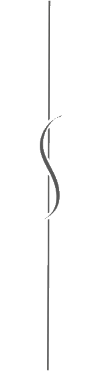

Цель проекта - Разработать сайт, который способствует удобному поиску школьных туристических поездок.

Актуальность проекта - На данный момент школьный туризм очень слабо развит на территории России, даже несмотря на то, что что подобный вид поездок позволяет обучающимся не только лучше разобраться в школьной программе, но и интересно провести свое свободное от занятий время. К тому же даже при желании организовать такую поездку нелегко, в связи с отсутствием ресурсов, на которых можно легко найти необходимые направления по школьным темам.